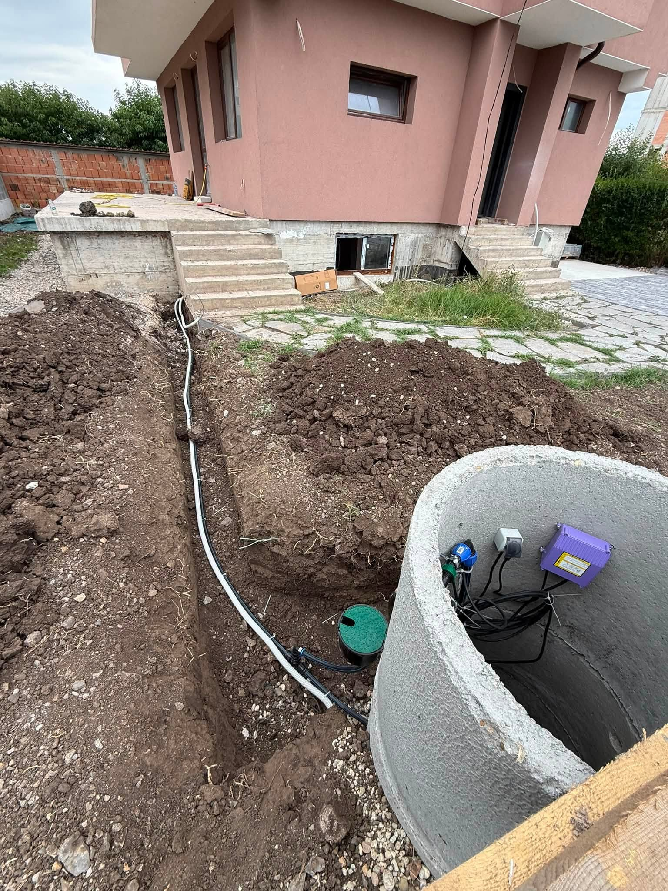
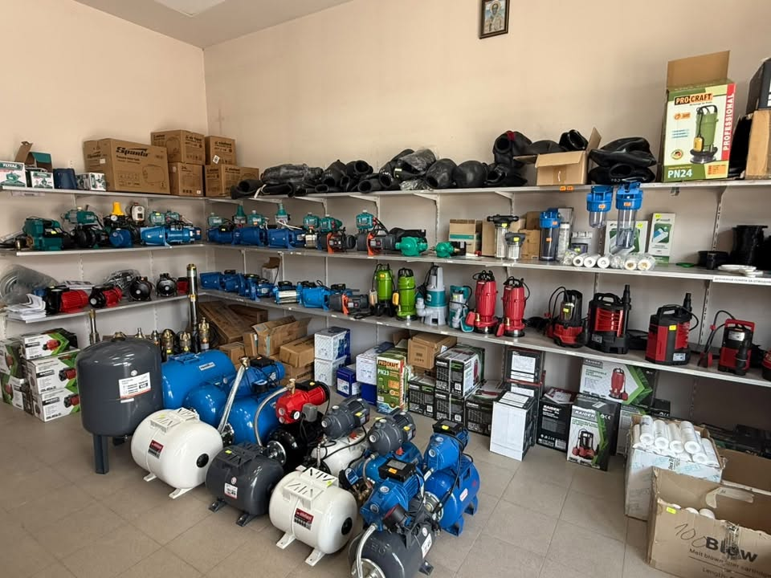
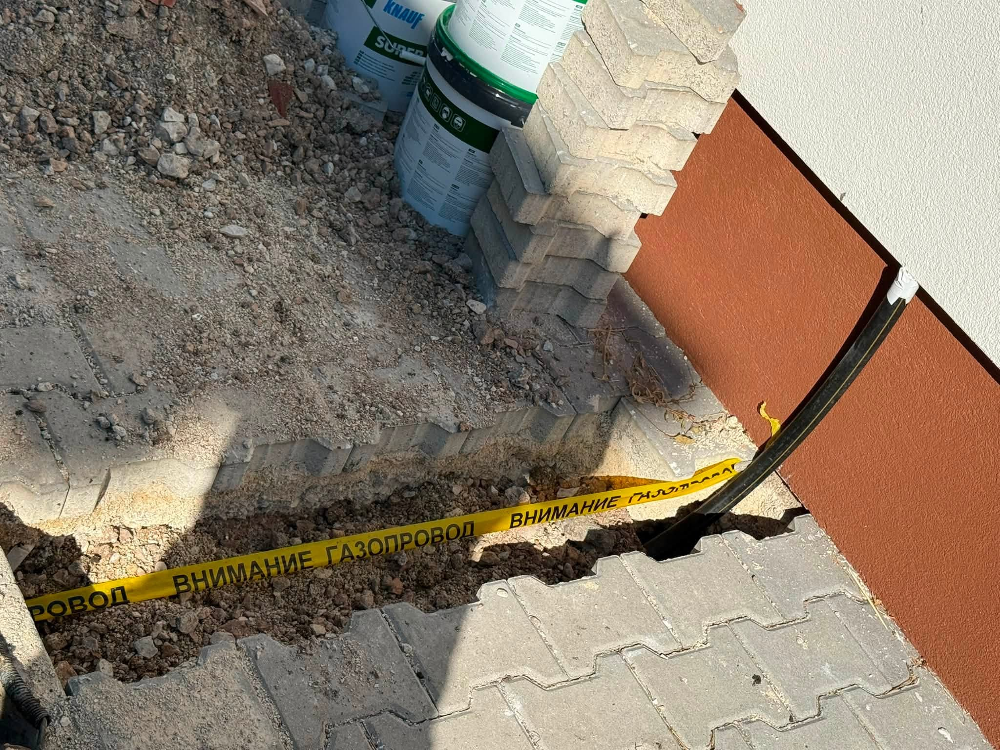

Какво включва РЕ-HD заваряването
Базирани сме в Костинброд и обслужваме София и София област. Поемаме процеса — от оглед и оферта до монтаж и настройка.
Използваме електродифузно заваряване там, където са нужни здрави и дълготрайни съединения на полиетиленови тръби. Най-често като част от газови или водопроводни трасета на обекта.
Правим електродифузни съединения на РЕ-HD за сигурни връзки при газови и водопроводни трасета.
Най-често е част от цялостния монтаж, не изолирана услуга без контекст.
- Електродифузно заваряване на РЕ-HD
- За газови и водопроводни трасета
- Качествени съединения и контрол
- Част от цялостния монтаж на обекта
Оферта по брой съединения
Електродифузното заваряване се оферира според броя и диаметъра на съединенията, често като част от трасе. След оглед — ясна цена за обхвата.
Какво не е включено / уточняваме честно: Не заваряваме без подходящи фитинги и подготовка на тръбите. Не подменяме цяло трасе „на метър“ без оглед.
Подготовка и заваряване
Подготовка
Тръби, фитинги и място за работа.
Заваряване
Електродифузни съединения.
Контрол
Проверка на съединенията.
Интеграция
Продължение на трасето/монтажа.
РЕ-HD заваряване в областта
Правим електродифузно заваряване на РЕ-HD в София област и при монтажни обекти около София.
Вижте покритието по населени места ↓
Заварки на терен


Въпроси за РЕ-HD
Какъв е ценовият ориентир за електродифузно заваряване?
Електродифузното заваряване се оферира според броя и диаметъра на съединенията, често като част от трасе. След оглед — ясна цена за обхвата.
За какво се ползва?
За надеждни съединения на полиетиленови тръби РЕ-HD.
Комбинирате ли с газови/водопроводни трасета?
Да — често като част от монтажа.
Как да заявя?
0886 391 729
Електродифузно заваряване в София — работите ли?
В София заваряваме РЕ-HD като част от монтажни трасета, често в ограничени шахти. Обадете се на 0886 391 729 за оглед.
Електродифузно заваряване в Костинброд — работите ли?
В Костинброд заваряването влиза директно в монтажа на трасето. Обадете се на 0886 391 729 за оглед.
Електродифузно заваряване в Сливница — работите ли?
В Сливница съединенията обикновено се правят на място, докато се изгражда мрежата. Обадете се на 0886 391 729 за оглед.
Електродифузно заваряване в Драгоман — работите ли?
Около Драгоман първо мерим диаметрите, после докарваме нужните фитинги. Обадете се на 0886 391 729 за оглед.
Електродифузно заваряване в Годеч — работите ли?
За Годеч диаметрите се уточняват предварително, за да няма изненади на обекта. Обадете се на 0886 391 729 за оглед.
Електродифузно заваряване в Божурище — работите ли?
В Божурище заваряването често се връзва в същия дневен монтаж на трасето. Обадете се на 0886 391 729 за оглед.
Електродифузно заваряване в Своге — работите ли?
В Своге подготовката на тръбите се съобразява с условията на терена. Обадете се на 0886 391 729 за оглед.
Електродифузно заваряване в Елин Пелин — работите ли?
В Елин Пелин правим съединения и за по-дълги стопански трасета. Обадете се на 0886 391 729 за оглед.
Електродифузно заваряване в Банкя — работите ли?
В Банкя работим компактно в жилищни обекти. Обадете се на 0886 391 729 за оглед.
Електродифузно заваряване в Нови Искър — работите ли?
В Нови Искър заваряването влиза в уговорения монтажен график за деня. Обадете се на 0886 391 729 за оглед.